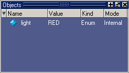
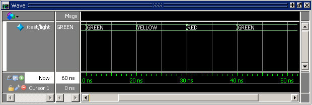
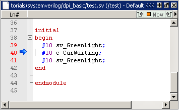

Now we
can run the simulation to see what happens to the “light” object
in the Objects window.
Procedure
- UNIX and Linux: Drag and drop the light object
into a Wave window.
Windows: The light object
has already been placed in the Wave window.
- Once in
simulation mode, you can step through the code or simply run the
simulation in 10 ns increments to observe changes in the light signal’s
waveform. If you look in the Objects window in the Questa SIM graphic interface (Figure 1), you should see the “light” object
with its initial value of RED. If the Objects window is not open,
select from
the Main menus to open it.
Figure 1. The light Signal in
the Objects Window
- Run the
simulation for 10 ns.
- Enter
“run 10 ns” at the command line. You will see light turn
“GREEN” in the Objects and Wave windows.
- Repeat
several times and watch the Wave window as it changes values at
the appropriate simulation times (Figure 2).
Figure 2. The light Signal in
the Wave Window
- Restart
the simulation.
- Click
the Restart icon.

- In the
Restart dialog box, click the OK button.
- Run the
simulation for 10 ns.
- Enter
“run 10 ns” at the command line.
- View the test.sv code
in the Source window.
- Select
the test.sv tab.
- Step through
the code.
- Click
the Step Into icon
 and
watch the blue arrow in the Source window move through the code
for test.sv (Figure 3) and foreign.c.
This allows you to keep track of where you are in the source files
as you step through the simulation. Feel free to experiment and
try adding your own functions, tasks, statements, and so on.
and
watch the blue arrow in the Source window move through the code
for test.sv (Figure 3) and foreign.c.
This allows you to keep track of where you are in the source files
as you step through the simulation. Feel free to experiment and
try adding your own functions, tasks, statements, and so on.Figure 3. Source Code for test.sv 